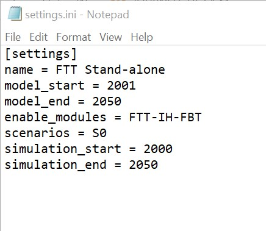
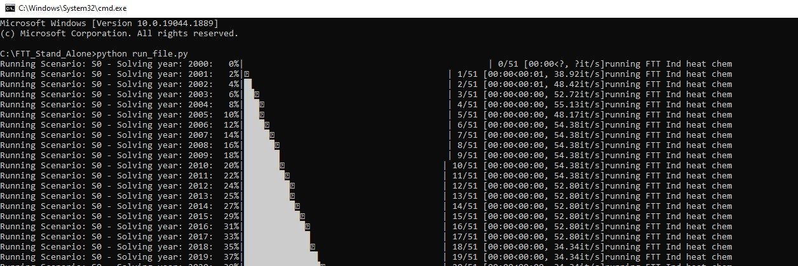
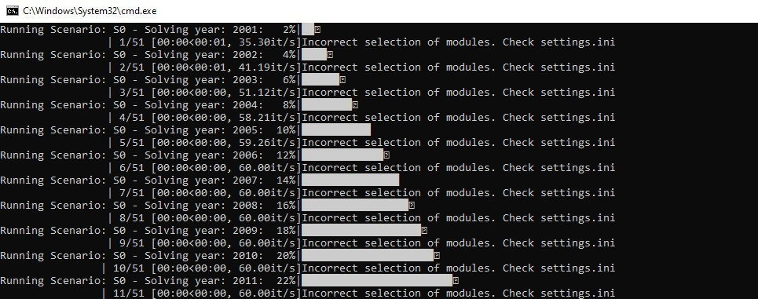
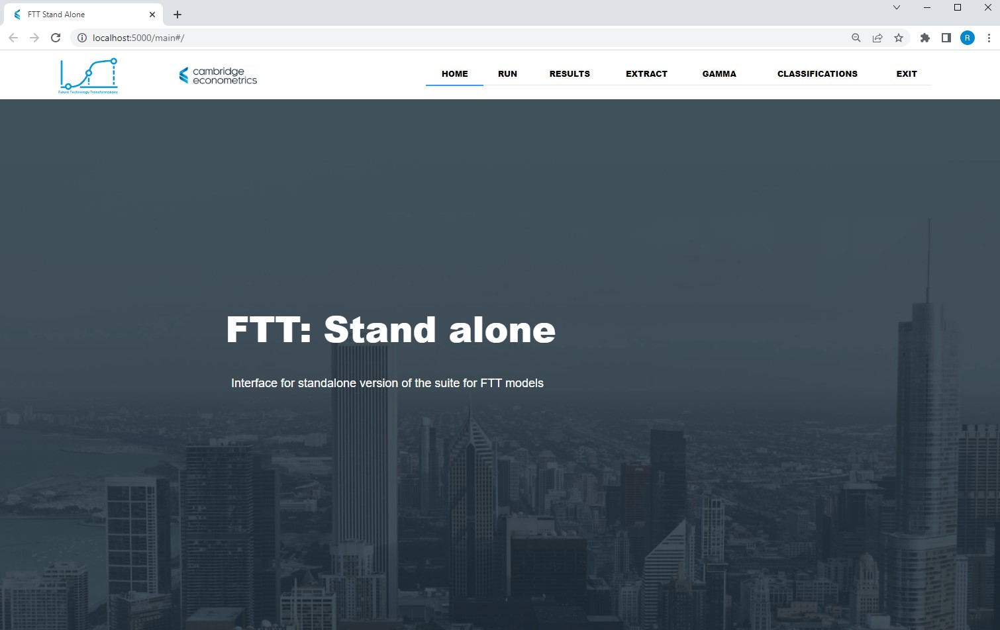
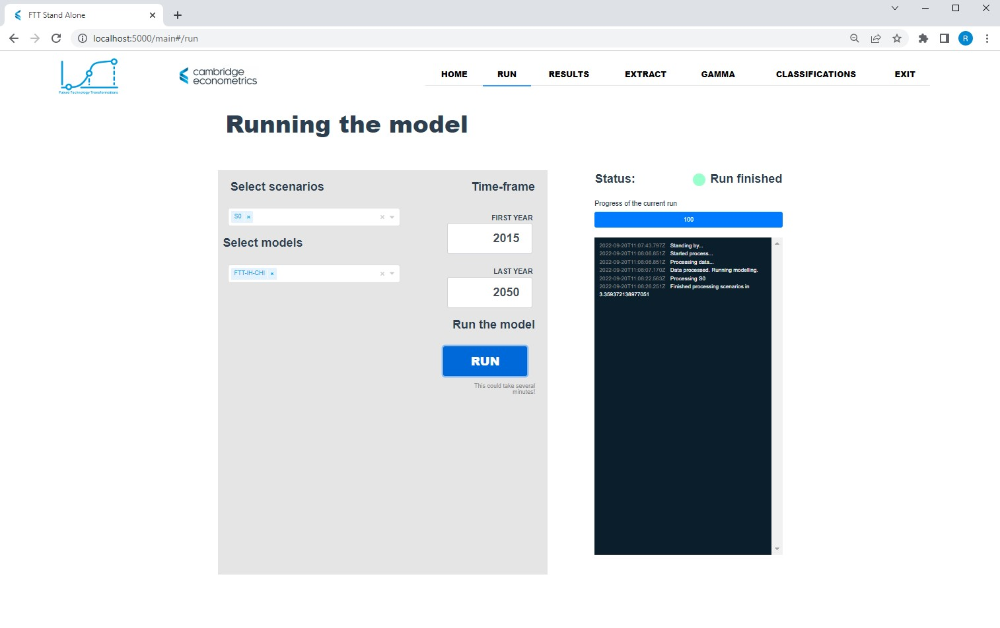
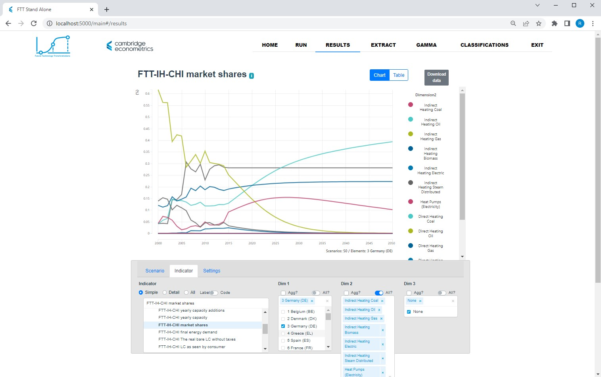
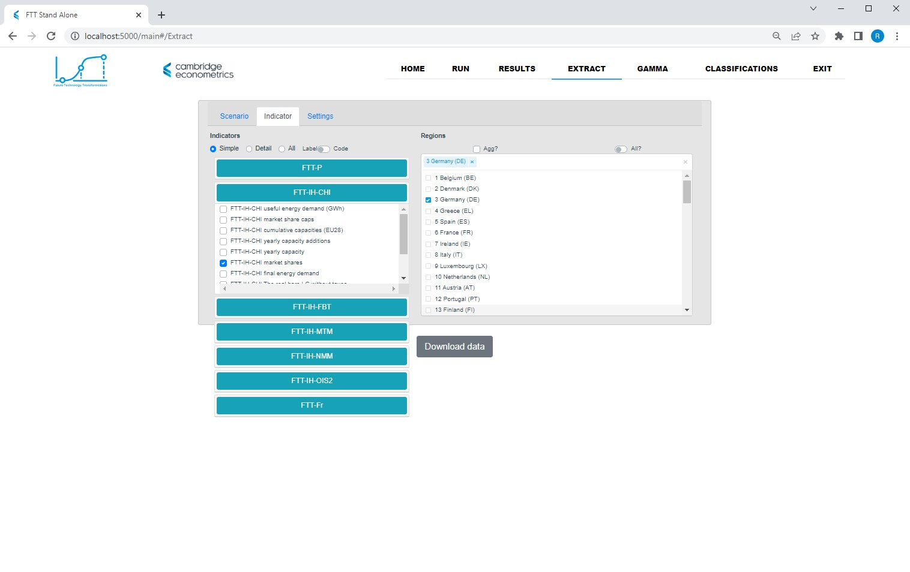
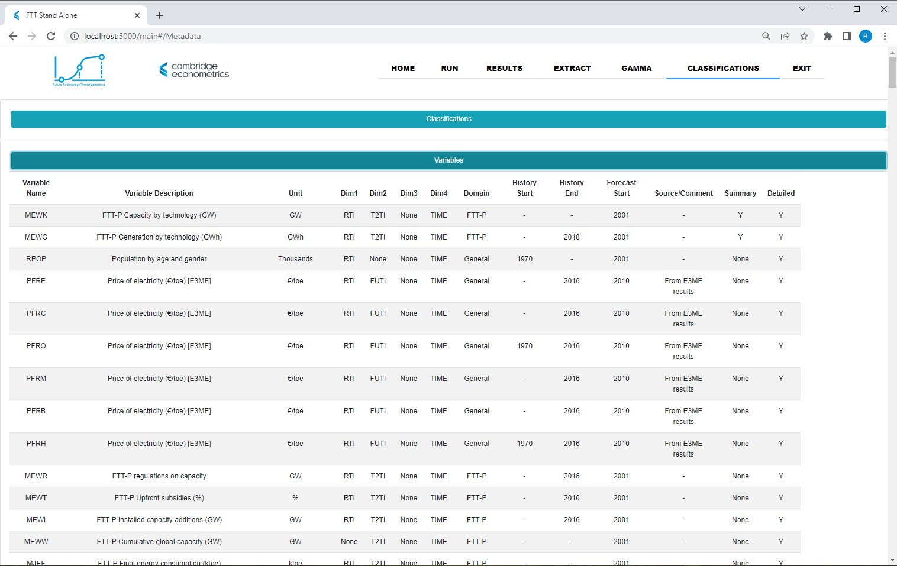

Running FTT Stand Alone¶
Running FTT Stand Alone from the command line¶
FTT Stand Alone can be run from the command line or terminal by calling the run file, run_file.py, which is located in the main project folder FTT_Stand_Alone. In order for the model to run correctly, the correct initialisation settings must be input into settings.ini, which is also in the main project folder:
{kind=link}
The different modules in FTT Stand Alone can be enabled in settings.ini, and it is possible to enable multiple different modules at the same time by using commas to separate, e.g.
enable_modules = FTT-IH-CHI, FTT-Fr
S0 is FTT Stand Alone’s baseline scenario, which incorporates all current policies and projections into the model’s simulation. Scenarios which differ from the baseline due to changes in policy inputs can be run alongside the baseline. Two additional scenarios for FTT: Power already exist, S1 and S2.
It is recommended that model_start and simulation_start are left unchanged, as the model will be unable to run if there is a gap between the start year of the simulation and the last year of historical data. However, model_end and simulation_end can be changed to any date after the start date. This allows the model to be run for shorter periods of time when necessary. 2050 is currently the maximum end year of the simulation period.
The model will tell you which module is running. If an incorrect selection of modules is made, this will be printed in the command window.
 {kind=link}
{kind=link}
Running the model this way will allow it to easily be tested, with errors or warnings appearing in the command window. However, the results of the model cannot be viewed when running this way.
Running FTT Stand Alone from the front end¶
The model’s front end environment can be launched by clicking on FTT_Stand_Alone_Launcher.cmd, or running FTT_Stand_Alone_Launcher.cmd from the command line. The front end will allow you to visualise the results of the simulation.
{kind=link}
To run the model, go to the RUN tab and select the desired settings:
{kind=link}
To run a standard baseline scenario for any module, select scenario S0 and set the start year to 2000, and the end year to 2050. Click RUN. The status will display a green light with Run finished next to it. The results of the run can then be viewed in the RESULTS tab:
{kind=link}
To view the results of a particular module, navigate to the Indicator box and select the relevant module. A list of variables will appear under it, from which you can select the variable to view in results visualiser. In the example above, I have selected FTT-IH-CHI, the industrial heat module for the chemical sector, and then selected market shares for Germany and all technologies. It is clear from the chart that Indirect Heating Gas is being substituted for the cheaper alternative Indirect Heating Oil.
The results can be downloaded by navigating to the EXTRACT heading:
{kind=link}
Here, the results can be filtered by scenario, module, and variable, and downloaded as absolute values, their absolute or relative difference from the baseline, or their year-on-year change.
The CLASSIFICATIONS tab can be used to check variable names, descriptions, units, dimensions, and timelines:
{kind=link}
The GAMMA tab contains a calibration tool for model developers, and should be avoided when simply running the model.
Note
This project is under active development.